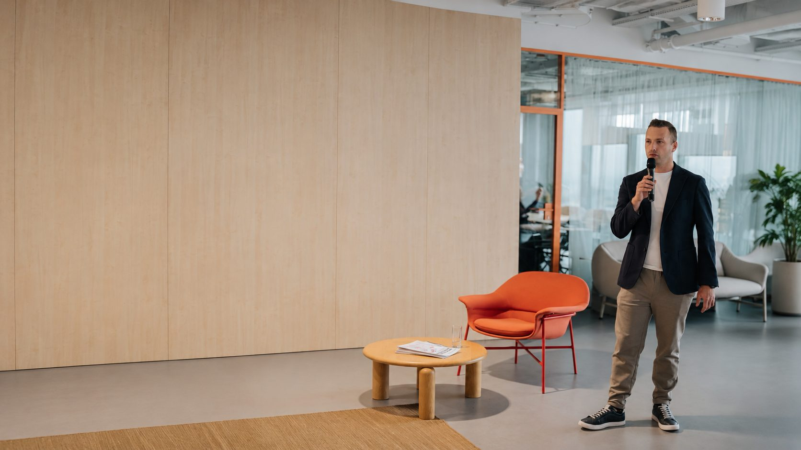
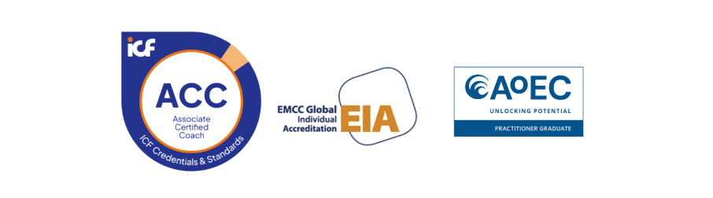
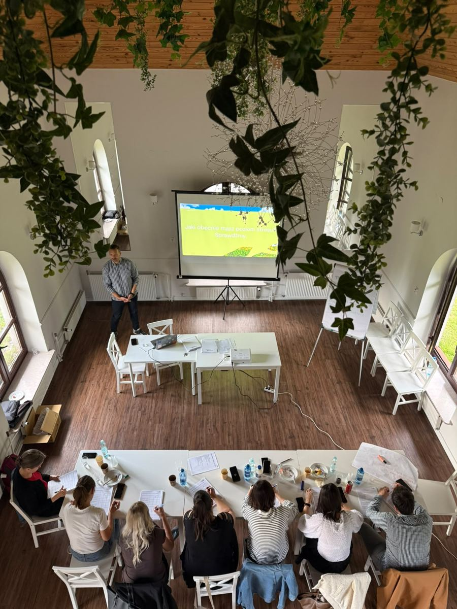
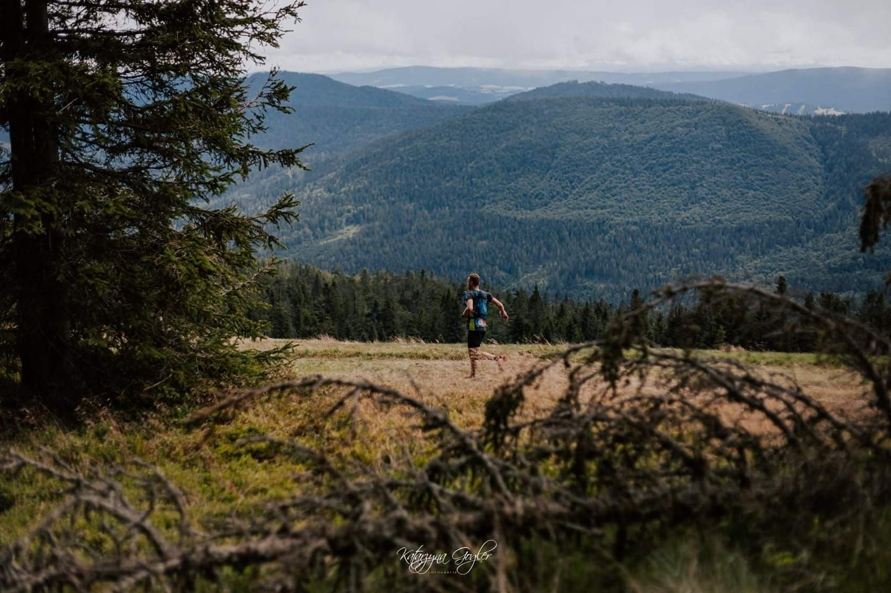
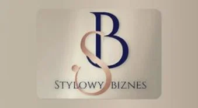
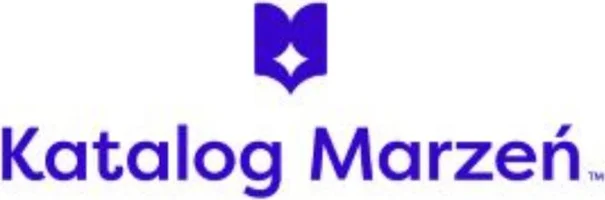
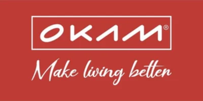
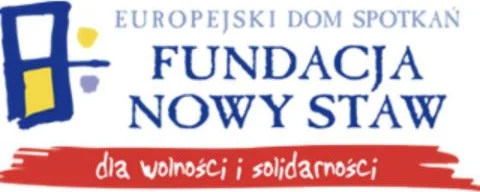
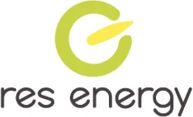

PawełSudomir
Wspieram w podejmowaniu decyzji i skutecznym działaniu w wymagającym środowisku
lat doświadczenia
godzin sesji
procesów coachingowych
akredytacja
Obszary współpracy
W czym pomagam
Coaching
Indywidualna praca z liderem nad decyzjami, komunikacją i działaniem pod presją.Więcej (02)Programy mentoringowe
Programy, w których doświadczenie liderów realnie przechodzi na kolejnych managerów.Więcej (03)Warsztaty i szkolenia
Praktyczne warsztaty z przywództwa, komunikacji i pracy pod presją. Mniej teorii, więcej ćwiczeń.Więcej (04)Facylitacja i coaching zespołowy
Spotkania, na których zarządy i zespoły dochodzą do decyzji, oraz praca nad współpracą w zespole.WięcejBiznes i ludzie
w jednym procesie




O mnie
Executive & Leadership Coach
Łączę doświadczenie biznesowe zdobyte w międzynarodowych organizacjach z coachingiem transformacyjnym, szkoleniami i doradztwem. Dzięki temu rozumiem nie tylko wyzwania związane z rozwojem liderów, ale również presję odpowiedzialności za ludzi, realizację strategii i osiąganie wyników biznesowych.
Jestem Executive & Leadership Coachem z międzynarodową akredytacją EMCC oraz absolwentem programu Executive Coach AoEC (Academy of Executive Coaching) – potrójnie akredytowanego przez EMCC, ICF i Association for Coaching. Od ponad 15 lat współpracuję z liderami, zarządami i organizacjami, wspierając ich w rozwoju przywództwa, prowadzeniu zmian oraz budowaniu organizacji, które skutecznie realizują swoje cele biznesowe.

13 lat
ultramaratonów górskich
Góry uczą tego, czego uczę liderów. Konsekwencji, cierpliwości i zarządzania energią: umiejętności niezwykle potrzebnych w przywództwie.
Opinie
Co mówią klienci
Miałam okazję współpracować z Pawłem w obszarze coachingu. Otrzymałam konkretne wsparcie, wskazówki i narzędzia. Polecam każdemu, kto szuka profesjonalnej współpracy i doświadczenia. Paweł posiada odpowiednie kompetencje i wiedzę, którymi się dzieli i umiejętnie kieruje, tak aby wypracować najlepsze rozwiązania. Właśnie takie podejście pomogło mi wybrać kierunek działania, ustalić priorytety oraz zaplanować kolejne kroki. Bardzo polecam!
Nie jestem osobą, która przesadnie wierzyła w coaching. Ale jestem wdzięczna, że się zdecydowałam na pracę z Pawłem.
Paweł to coach uważny, skrupulatny. Przygotowany na każdą kolejną sesję. Tworzy atmosferę zaufania i komfortu – co nie jest łatwe, szczególnie rozmawiając online! Co szczególnie do mnie trafiło to to, że za każdym razem wiedziałam, że mogę przyjść z tym, czego akurat potrzebuję, a Paweł podąży za mną – bo ma do tego narzędzia i przygotowanie.
Wypracowałam z jego pomocą narzędzia, z których korzystam codziennie i naprawdę ułatwiają mi życie.
Gdy szukasz zmiany, potrzebujesz się przeprofilować, coś Cię uwiera – szczególnie w życiu profesjonalnym – Paweł to Twój człowiek!
Powodzenia Paweł i jeszcze raz wielkie dzięki!
Praca z Pawłem to nie był po prostu „proces coachingowy” – to była dobra, ludzka rozmowa, którą Paweł potrafił dobrze prowadzić. Paweł tworzy przestrzeń, w której naprawdę mogłam się zatrzymać, pomyśleć, powiedzieć coś na głos bez obaw. Słucha uważnie, z ciekawością i bez presji. Dzięki niemu poukładałam kilka ważnych dla siebie spraw ale i wzmocniłam siebie. Bardzo polecam każdemu, kto szuka nie tylko coacha, ale też uważnego towarzysza w zmianie. Dzięki Paweł!
Miałam coaching z Pawłem 🙂 Nie wiedziałam, czego się spodziewać, a wyszłam z konkretnymi narzędziami i nową energią – dziękuję! Dzięki Tobie poukładałam sobie w głowie więcej niż przez ostatnie miesiące. Przez cały czas czułam wsparcie i przestrzeń do przemyśleń. Trafne spostrzeżenia i różnorodne pytania pomogły mi skupić się na tym, co naprawdę ważne, dzięki czemu dość szybko osiągnęłam cel. Gorąco polecam! 🙂
Sesje coachingowe z Pawłem, to kilka tygodni pełne emocji i refleksji. Pokazały mi szerszą perspektywę patrzenia na świat, na problemy i wyzwania – dotyczy to zarówno sfery prywatnej jak i służbowej. Nie wiedziałam czego się spodziewać po sesjach, ale Paweł świetnie poprowadził mnie za rękę.
Okazało się, że „się da”, że jest rozwiązanie, że mam zasoby i muszę (i chcę!) po nie sięgnąć. Paweł jest bardzo uważny, ma doskonałe wyczucie sytuacji i daje przestrzeń na to, aby przemyśleć i przeanalizować.
Nabrałam pewności siebie (która mnie mocno ograniczała), zaczęłam doceniać sama siebie, okazało się, że mogę więcej i że mogę realizować moje cele.
Sesje coachingowe z Pawłem to podróż w głąb siebie i absolutnie polecam każdemu, kto choć przez chwilę wątpi w siebie i myśli, że „się nie da”!
Paweł: dziękuję Ci za tę fantastyczną przygodę, którą na pewno będziemy jeszcze wspólnie kontynuować.
Zaufali mi m.in.





Kontakt
Porozmawiajmy.
Podczas konsultacji opowiem, jak mogę Ci pomóc.